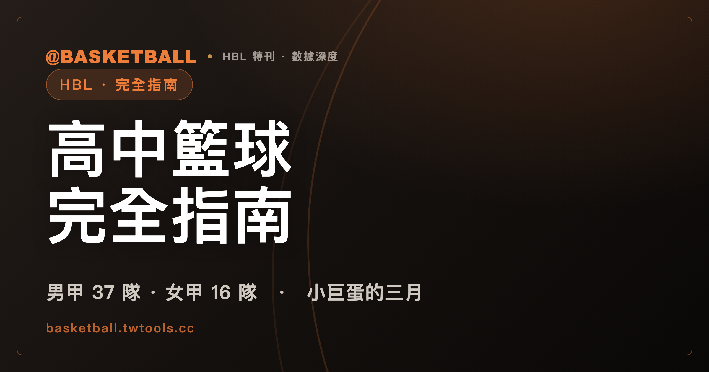

HBL 高中籃球甲級聯賽完全指南：賽制、小巨蛋決賽與歷屆冠軍
HBL（高中籃球甲級聯賽）由高中體總主辦，是台灣高中籃球最高層級賽事，1988 年開辦，以學年度稱呼賽季，近年男女子組決賽都在台北小巨蛋舉行。

HBL・完全指南｜114 學年度戰報・小巨蛋決賽・歷屆冠軍榜
HBL（高中籃球甲級聯賽）是台灣高中籃球最高層級的賽事，每年從秋天的資格賽開打，一路打到隔年春天在台北小巨蛋落幕的冠軍戰。跟一般球迷比較熟悉的職業聯賽不同，HBL 的參賽者全部是在學高中生，賽制上分男子組與女子組兩條平行賽事，各自晉級路徑不盡相同；命名方式也自成一格，官方與媒體不用「第幾屆」，而是統一以「學年度」稱呼賽季。這種以學年度取代屆數的做法，跟賽事本身依附在校園學制之下的性質有關，球隊組成、球員資格都跟著在學身份走，賽季自然也用學年度來對齊，而不是像職業聯賽那樣用連續屆數計算。這篇文章整理 HBL 的主辦單位、114 學年度的賽制與時間軸、114 學年度的戰報結果、歷屆冠軍榜、小巨蛋決賽的門票狀況、畢業生的出路，以及要去哪裡看轉播。
HBL 是什麼：主辦單位與學年度制
HBL 由中華民國高級中等學校體育總會（高中體總）主辦，官方網站為 hbl.com.tw，是台灣高中籃球體系中甲級層級的年度聯賽。高中體總同時也是主管台灣各項高中體育賽事的全國性單位，HBL 是其中知名度最高、關注度最集中的一項籃球賽事，「甲級」這個層級名稱本身也說明了它在整個高中籃球分級體系裡的位置，是同類賽事中規格最高的一級。這項賽事的前身於 1988 年（77 學年度）開辦，距今已有相當長的歷史，不過官方與媒體慣例並不把賽季換算成「第幾屆」對外稱呼，而是統一用「學年度」表示，例如本文戰報所在的球季稱為 114 學年度，對應的是西元 2025 至 2026 年這個學年。這個命名方式跟台灣其他運動聯賽略有不同，讀者查資料時如果只看到「114 學年度」而不是「第幾屆」，並不是資料缺漏，而是 HBL 一貫沿用的稱呼方式，也是這篇指南從頭到尾都會採用的紀年方式。
比賽分為男子組與女子組兩條獨立賽事，兩組各自安排資格賽、預賽、複賽等關卡，晉級路徑不完全相同，近年最終都在台北小巨蛋會師冠軍戰週末。
由於參賽者全部是在學高中生，本文在敘述戰況時，只根據公開賽場表現與官方公布的比賽結果與獎項資訊撰寫，不觸及球員的私生活、家庭背景或傷病細節，措辭上也刻意比報導成人職業球隊更為保守，這一點會貫穿全文，包括後面提到冠軍戰 MVP 等個別球員的段落。
賽制與賽季時間軸：114 學年度怎麼打
114 學年度男子組共有 37 支隊伍參賽，女子組則有 16 隊，參賽規模的落差反映出男子組報名學校的基數遠大於女子組。
男子組賽制為資格賽、預賽（16 強）、複賽（12 強）、準決賽（8 強）、總決賽，比女子組多了一輪關卡；女子組賽制則是資格賽、預賽、複賽、總決賽。換句話說，同樣要打進四強，男子組球隊得多過一關準決賽，女子組球隊則是複賽打完就直接進入總決賽週。這樣的差異跟前面提到的參賽規模有關，男子組 37 隊的基數遠大於女子組 16 隊，賽制多設一輪關卡，也等於是讓男子組有更長的淘汰過程來篩選出最後站上小巨蛋的隊伍。
賽程走的是全台巡迴模式，不同階段的比賽落在不同城市的場館，而不是固定在單一地點打完整季。114 學年度的時間軸大致如下。
| 階段 | 時間 | 地點 |
|---|---|---|
| 資格賽 | 10 月中 | 桃園 |
| 預賽 | 11 月底至 12 月初 | 高雄 |
| 男子組複賽 | 12 月底 | 屏東 |
| 女子組複賽、男子組準決賽 | 2 月 | 新莊 |
| 四強與冠軍戰 | 3 月 21 日至 22 日 | 台北小巨蛋 |
從這張時間軸可以看出，HBL 一個學年度的賽程橫跨秋、冬、春三季，從 10 月中一路打到隔年 3 月下旬，全台巡迴的安排也讓不同地區的球迷都有機會在主場看到甲級強權出賽，最後才收斂到台北小巨蛋的決賽週。整個賽季前後歷時超過五個月，比賽場館從桃園、高雄、屏東一路換到新莊，直到最後兩天才固定在台北小巨蛋，這種階段性換場地的安排，也讓 HBL 跟大部分固定主客場制的職業聯賽有明顯不同的樣貌。對球迷來說，這也代表想跟上完整賽季，得留意賽事在不同城市之間移動的節奏，而不是像職業聯賽那樣天天守著同一座主場館。
114 學年度戰報：松山二連霸、陽明終結北一女三連霸
男子組方面，松山高中在冠軍戰以 87 比 71 擊敗南湖高中，完成二連霸，也是隊史第 8 座冠軍，追平隊史最多冠軍紀錄。冠軍戰 MVP 由松山高中的劉廷寬拿下，該役他攻下 26 分。季軍戰則由東泰高中以 68 比 63 擊敗能仁家商，取得四強第 3 名。松山高中這座冠軍的意義不只是二連霸本身，隊史累積冠軍數來到第 8 座，追平隊史最多冠軍的紀錄，等於在近兩個學年度把自己重新推回男子組最有分量的傳統強權之列。
女子組方面，陽明高中在冠軍戰以 61 比 53 擊敗北一女中，終結了北一女中原本的三連霸，同時也是陽明高中的校史首冠；執教近 30 年的教練李台英，也在這一役首度率隊拿下冠軍。女子組 MVP 由陽明高中的蘇衡拿下，該役她繳出 20 分、10 籃板的成績。季軍戰由永仁高中以 83 比 82 險勝南山高中，拿下四強第 3 名。對陽明高中來說，這座冠軍同時具備兩層意義：一是終結對手的三連霸，二是寫下自己隊史從未有過的首座冠軍，而執教近 30 年才等到這一冠的李台英教練，這場勝利對球隊教練團而言也是長年累積後的第一次突破。
以下是 114 學年度男女子組四強完整名次，詳細賽況可見 /hbl/。
| 名次 | 男子組 | 備註 | 女子組 | 備註 |
|---|---|---|---|---|
| 冠軍 | 松山高中 | 冠軍戰 87：71 勝南湖高中 | 陽明高中 | 冠軍戰 61：53 勝北一女中 |
| 亞軍 | 南湖高中 | － | 北一女中 | － |
| 季軍 | 東泰高中 | 季軍戰 68：63 勝能仁家商 | 永仁高中 | 季軍戰 83：82 勝南山高中 |
| 殿軍 | 能仁家商 | － | 南山高中 | － |
把這份四強名次放進歷史脈絡來看，松山高中的二連霸讓球隊追平隊史最多冠軍紀錄，是男子組近兩個學年度的絕對主角；女子組的變化則更明顯，長期稱霸的北一女中三連霸被終結，陽明高中拿下的是校史第一座冠軍，執教多年的教練生涯也在這個學年度迎來第一座獎盃。
歷屆冠軍榜：106 學年度起
HBL 官方公開賽果資料庫目前可回溯的區間，僅到 106 學年度為止，在此之前的冠軍紀錄不在本文討論範圍內。以下是 106 學年度至 114 學年度、男女子組冠軍的完整紀錄。
| 學年度 | 男子組冠軍 | 女子組冠軍 |
|---|---|---|
| 106 | 松山高中 | 普門中學 |
| 107 | 能仁家商 | 南山高中 |
| 108 | 能仁家商 | 淡水商工 |
| 109 | 泰山高中 | 淡水商工 |
| 110 | 光復高中 | 淡水商工 |
| 111 | 光復高中 | 淡水商工 |
| 112 | 南山高中 | 北一女中 |
| 113 | 松山高中 | 北一女中 |
| 114 | 松山高中 | 陽明高中 |
把這張表格從頭看到尾，幾條脈絡相當清楚。女子組方面，淡水商工在 108 學年度到 111 學年度連續四個學年度封王，是這張表格裡最長的連霸紀錄；北一女中接棒在 112、113 兩個學年度稱霸，直到 114 學年度才被陽明高中終結。男子組方面，能仁家商在 107、108 學年度二連霸，光復高中在 110、111 學年度二連霸，松山高中則是在 113、114 學年度完成本文開頭提到的二連霸，並追平隊史最多冠軍紀錄。整體來看，這九個學年度裡，男子組冠軍出現過松山高中、能仁家商、泰山高中、光復高中、南山高中共五支不同球隊，女子組冠軍則出現過普門中學、南山高中、淡水商工、北一女中、陽明高中共五支不同球隊，兩組都不是單一球隊長期壟斷，而是幾支強權輪流稱霸、偶爾出現連霸期的格局。需要提醒的是，這張表格反映的是官方資料庫可回溯的九個學年度，並不代表 HBL 自 1988 年開辦以來的完整冠軍史，讀者若要查詢更早期的紀錄，需要透過其他管道確認。
小巨蛋決賽文化
自 103 學年度重返台北小巨蛋以來，近年 HBL 男女子組的決賽週都在這裡舉行；114 學年度的四強與冠軍戰，就是在 3 月 21 日至 22 日於小巨蛋登場。門票方面，114 學年度採兩種方式：3 月 21 日的四強賽透過 ibon 索票、3 月 22 日的男女冠軍戰採售票（票價 100 至 500 元）；依高中體總公告，售票場次不開放現場候補，其餘場次維持開放現場候補入場。至於實際到場觀眾人數，官方並未公布具體數字，本文也不做推估。
小巨蛋場地本身就帶有一種指標意義：HBL 的資格賽、預賽、複賽都分散在桃園、高雄、屏東、新莊等地的一般球場舉行，只有走到四強與冠軍戰，賽事才會集中到台北小巨蛋，收官在這座場館，是 103 學年度重返小巨蛋後延續至今的安排。從桃園資格賽開始算起，球隊要一路過關斬將，換過至少四個不同城市的場館，才能拿到站上小巨蛋的資格，這也讓 3 月 21 日至 22 日這個週末，成為每個學年度球迷最容易聚焦的兩天，男女子組的四強戰與冠軍戰都集中在這兩天內完成。
畢業後的路：從 HBL 到 UBA
HBL 球員畢業後，常見的下一站是進入大學校隊、參加 UBA（大專籃球聯賽），再視發展情況挑戰職業選秀或旅外；以 2026 年 PLG 選秀為例，狀元王鼎鈞便來自大學球隊健行科大。也有少數頂尖球員在畢業階段就直接評估旅外選項，下一段的例子正是如此。
以 114 學年度冠軍戰 MVP 劉廷寬為例，據中央社 2026 年 5 月 28 日報導，他當時正在旅美與留台之間評估，自述兩邊機率一半一半，預計 8 月前做出最終決定；若選擇留台，將加入 UBA 的虎尾科技大學。截至 2026 年 7 月中，尚未見到定案的後續公告，實際去向以本人或球隊的正式發布為準。這個案例也顯示，對 HBL 頂尖球員來說，旅外挑戰與進入國內大學體系，是畢業時實際擺在眼前的兩條路。
怎麼看比賽：Hami Video 獨家轉播
HBL 的新媒體轉播由中華電信 Hami Video 旗下的「HBLTV」獨家播出，部分場次另外會上電視頻道轉播。也就是說，想要跟上完整賽季的球迷，主要管道是這個獨家新媒體平台，電視頻道只涵蓋部分場次，並非每一場資格賽或預賽都會上電視轉播。截至 2026 年 7 月，115 學年度的賽程尚未公告，依照 HBL 歷年的慣例，新學年度賽程通常會在暑假尾聲到 9 月之間對外公告，並在 10 月開打資格賽，實際時間仍以官方屆時公告為準。
本文所述 HBL 主辦單位、114 學年度賽制與時間軸、戰報結果、歷屆冠軍紀錄、決賽門票狀況與畢業出路等內容，整理自高中體總官方網站公告、賽事官方 API 賽果資料，以及中央社等具名媒體報導；文中涉及特定學年度的數字與人事安排，均以標注的報導或公告時間點為準，115 學年度後續的正式賽程仍以官方最新公告為準。
常見問題
HBL 是什麼？由誰主辦？
HBL 是台灣高中籃球甲級聯賽，由中華民國高級中等學校體育總會（高中體總）主辦，官方網站為 hbl.com.tw，是這個層級籃球賽事裡規格最高的一項。賽事前身於 1988 年開辦，官方與媒體慣例以「學年度」稱呼每個賽季，而不是用「第幾屆」，例如本文戰報所在的賽季就稱為 114 學年度。比賽分男子組與女子組兩條平行賽事，各自晉級後在台北小巨蛋會師冠軍戰。
114 學年度 HBL 冠軍是誰？
男子組冠軍是松山高中，冠軍戰以 87 比 71 擊敗南湖高中，完成二連霸並追平隊史最多冠軍紀錄，冠軍戰 MVP 是攻下 26 分的劉廷寬；季軍是東泰高中，季軍戰以 68 比 63 擊敗能仁家商。女子組冠軍是陽明高中，冠軍戰以 61 比 53 擊敗北一女中，終結了北一女中的三連霸，同時拿下校史首冠，MVP 是攻下 20 分、10 籃板的蘇衡；季軍是永仁高中，季軍戰以 83 比 82 險勝南山高中。四強完整名次可見 /hbl/。
HBL 決賽在哪裡舉行？門票好買嗎？
HBL 男女子組的四強與冠軍戰，自 103 學年度重返台北小巨蛋後，近年都在這裡舉行；114 學年度的比賽日期是 3 月 21 日至 22 日。門票方面，四強賽採 ibon 索票、男女冠軍戰採售票；依高中體總公告，售票場次不開放現場候補，其餘場次開放現場候補入場。實際到場人數官方並未公布數字，本文也不做推估。
HBL 球員畢業後都去哪裡打球？
HBL 球員畢業後，常見的下一站是進入大學校隊參加 UBA（大專籃球聯賽），再視發展挑戰職業選秀或旅外。以 114 學年度冠軍戰 MVP 劉廷寬為例，據中央社 2026 年 5 月 28 日報導，他當時仍在旅美與留台之間評估（若留台將加入虎尾科大），截至 2026 年 7 月尚未定案，實際去向以正式公告為準。
怎麼收看 HBL 比賽轉播？115 學年度賽程公布了嗎？
HBL 新媒體轉播由中華電信 Hami Video 的「HBLTV」獨家播出，部分場次會另外上電視頻道，等於想追完整賽季的球迷主要還是得透過這個新媒體平台。截至 2026 年 7 月，115 學年度賽程尚未公告，依照往例會在暑假尾聲到 9 月之間公告，10 月開打資格賽，實際時間以官方屆時公告為準，讀者可持續關注官網 hbl.com.tw 的最新消息。